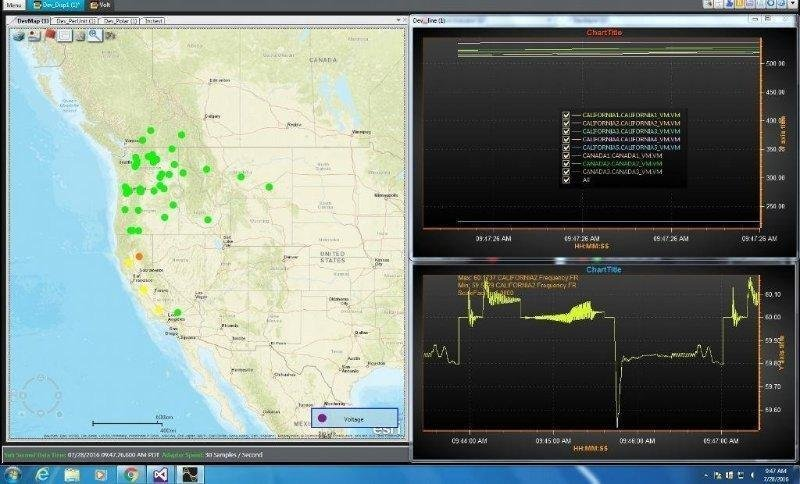

Software Engineering Intern
Worked on Electric Power Group’s Real Time Dynamics Monitoring System (RTDMS) application
RTDMS is a comprehensive platform for real-time wide-area analysis and monitoring using Synchrophasor data for use in control centers. RTDMS functions include data management, analysis and archiving; real-time visualization; and remote client access via the Intelligent Synchrophasor Gateway (ISG). The data functions include data parsing, bad data detection and handling, calculations, and advanced algorithms including event detection, mode meter, sensitivity, oscillation, islanding detection, etc. The visualization provides a dashboard with all key metrics including frequency, phase angles, power flows, voltages, damping and other key metrics available to operators at a glance for comprehensive wide-area real-time visualization and situational awareness.
Built a heatmap layer to monitor changing power grid conditions

Data collected at various power grids included frequency, phase angles, power flows, voltages, damping etc. While these metrics from individual power grids were rendered using graphs, charts, plots etc. there was no way of geographically visualizing the data. A map layer was required to visualize these metrics geographically. The heatmap layer was built to supplement the other diagnostic tools of the application to visualize how fluctuations in data reading at one geographical region interacted with another in 2D space. The heatmap layer was created using sparse geographic data collected from various locations.
Just like a heatmap layer of weather shows changing weather patterns, the power grid heatmap layer reflected fluctuating power grid conditions. The heatmap layer was split up along state lines and the user could choose one or multiple states to monitor. Sparse distribution of power grids across any geographic are made it difficult to construct a dense heatmap. This problem was solved by constructing an influence matrix across a geographic area and using the weight of each cell to determine the influence it had on neighboring cells thereby constructing a dense heatmap layer of cells. The resolution of the heatmap layer was thus governed by the dimensions of the influence matrix.